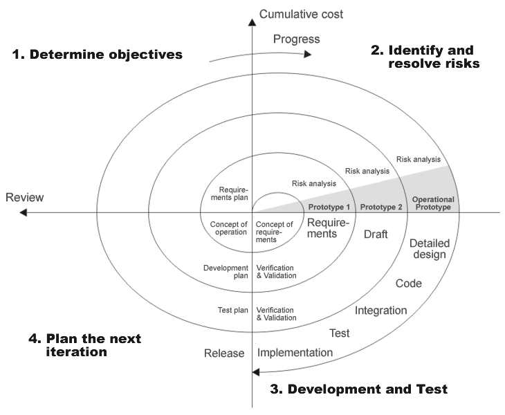

Coding Bootcamp: Software development process
Software development process - core activities
- Requirements capturing (also called Requirements analysis)
- Design
- Construction (also called Software implementation)
- Software Testing and Debugging
- Deployment
- Maintenance
Methodologies, paradigms and models
- Software engineering
- Waterfall
- Prototyping
- Incremental
- V-Model, Dual Vee Model
- Spiral
- Iterative and incremental development (IID)
- Agile (2001)
- Lean (2003)
- DevOps (2008)
Software engineering
Software engineering is the application of engineering to the design, development, implementation, testing and maintenance of software in a systematic method
Waterfall

Prototyping
Software prototyping is the activity of creating prototypes of software applications, i.e., incomplete versions of the software program being developed
Spiral

Spiral_model_(Boehm,_1988)
Iterative and incremental development (IID)

Iterative development model
Agile (2001)
- Agile software development describes a set of principles for software development under which requirements and solutions evolve through the collaborative effort of self-organizing cross-functional teams
- First coined in 2001, in the Manifesto for Agile Software Development
Lean (2003)
- Lean software development (LSD) is a translation of lean manufacturing and lean IT principles and practices to the software development domain
- Adapted from the Toyota Production System, it emerged from within the Agile community
Lean principles
- Eliminate waste
- Amplify learning
- Decide as late as possible
- Deliver as fast as possible
- Empower the team
- Build integrity in
- See the whole
DevOps
DevOps (a clipped compound of development and operations) is a culture, movement or practice that emphasizes the collaboration and communication of both software developers and other information-technology (IT) professionals while automating the process of software delivery and infrastructure changes
DevOps

DevOps
Supporting disciplines
- Configuration management
- Documentation
- Software Quality assurance (SQA)
- Project management
- User experience
- Compiler
- Debugger
- Profiler
- GUI designer
- Modeling
- IDE
- Build automation
- Release automation
- Testing

This work is licensed under a Creative Commons Attribution-NonCommercial-ShareAlike 4.0 International License.
.png){kind=link}